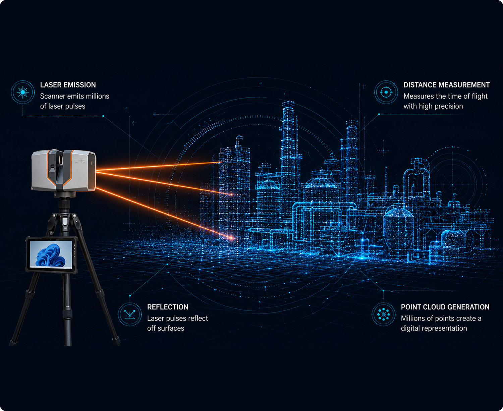
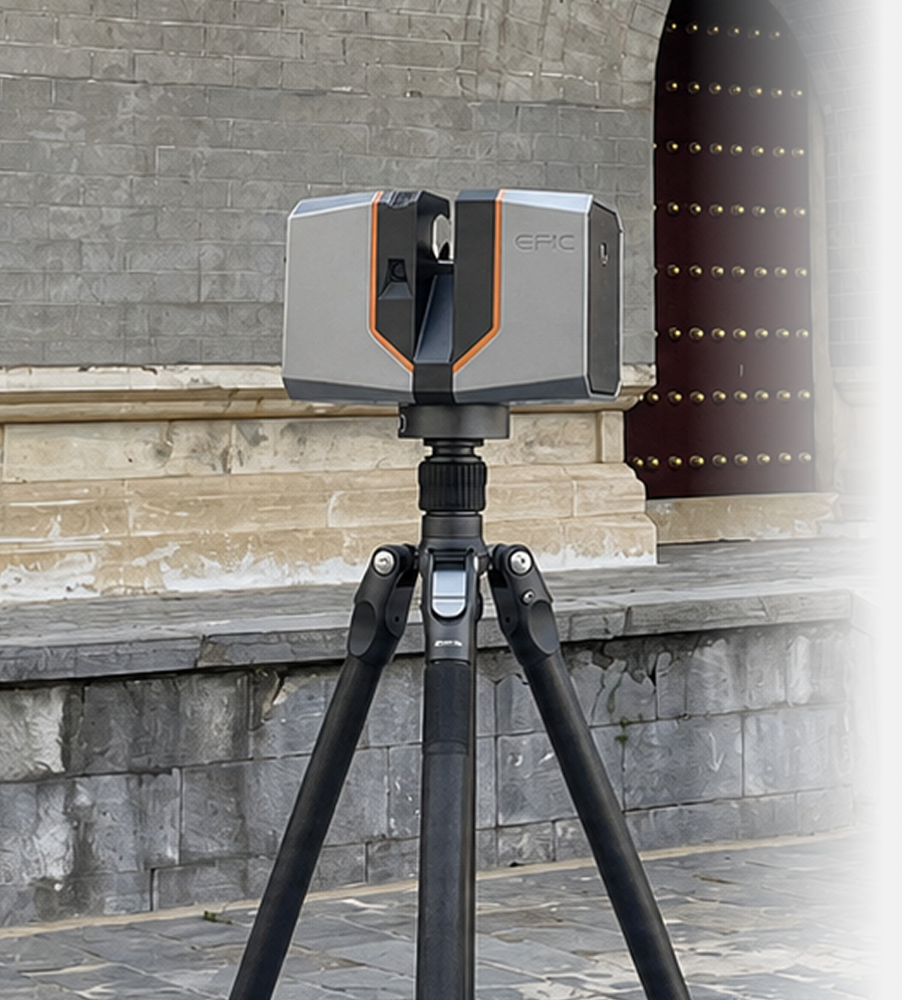
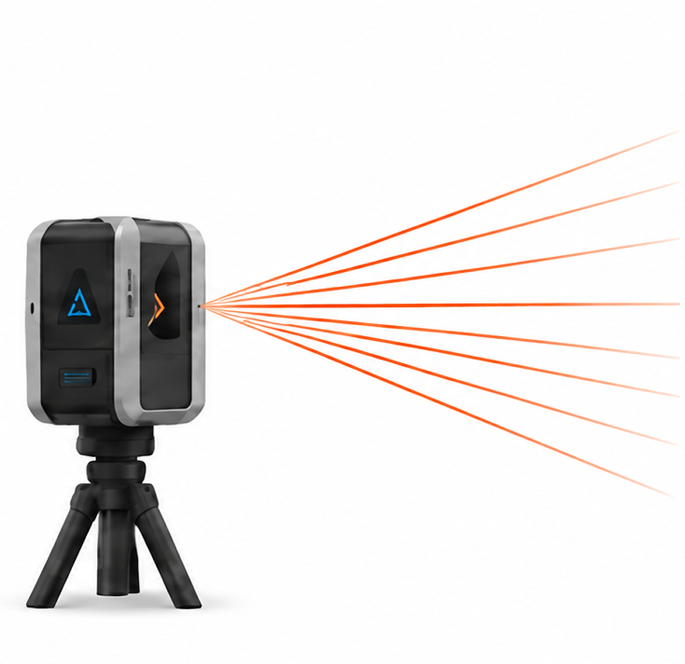
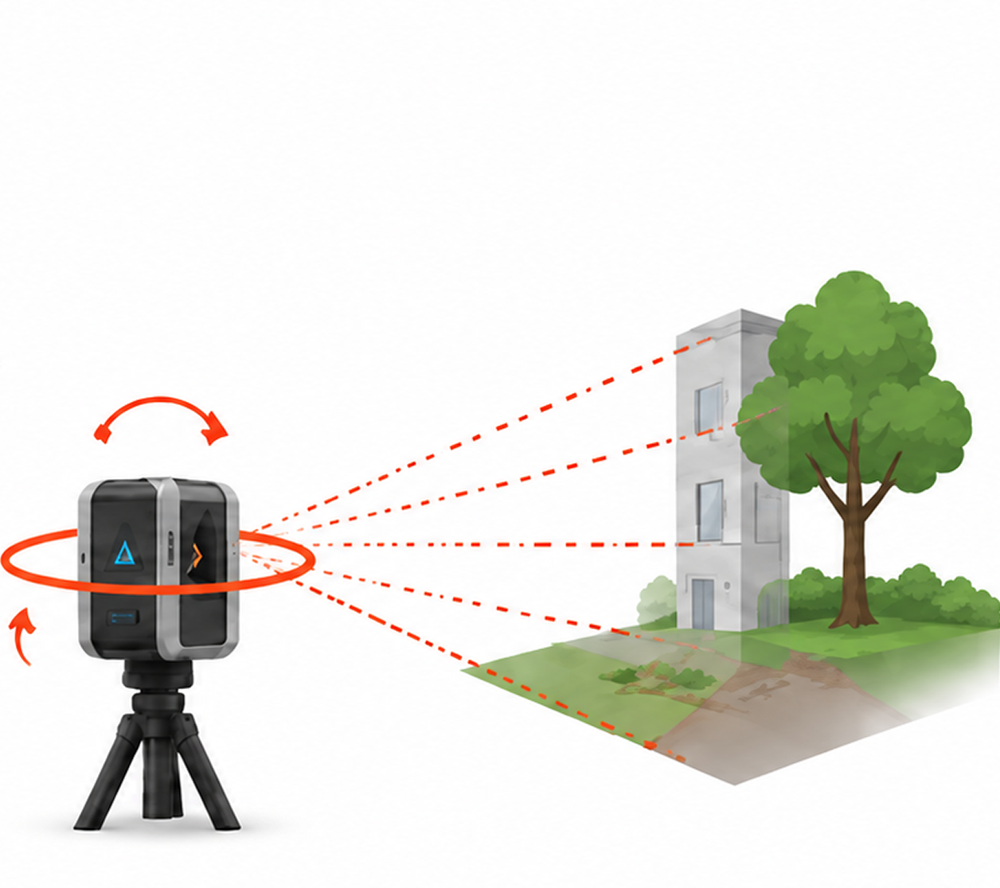
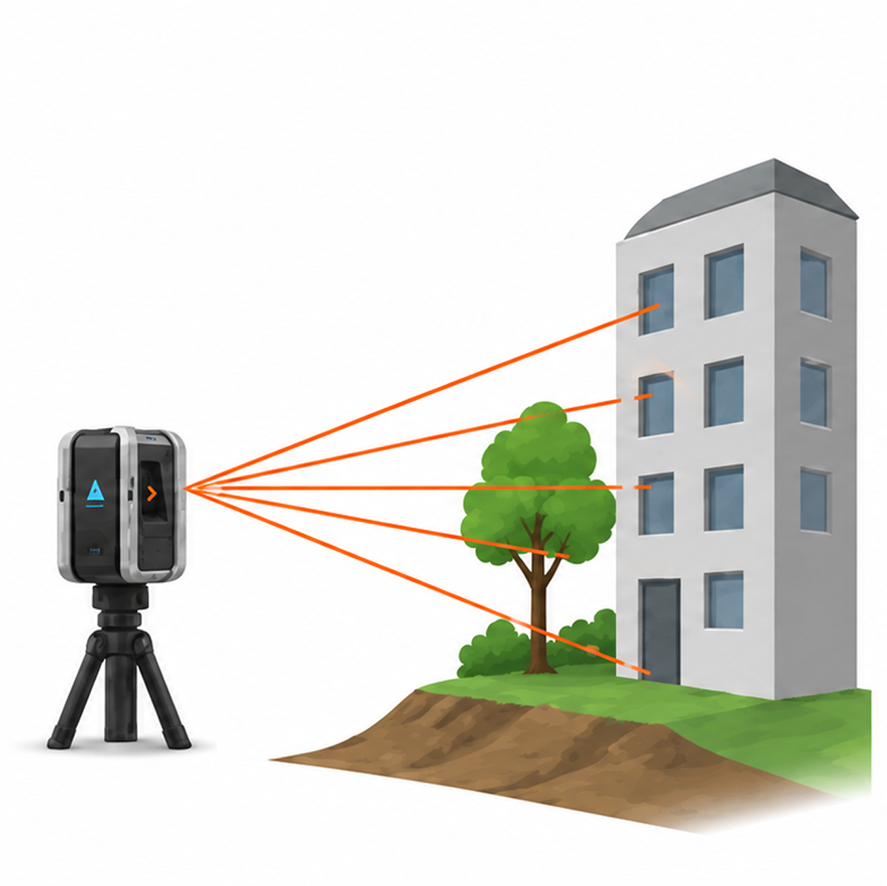
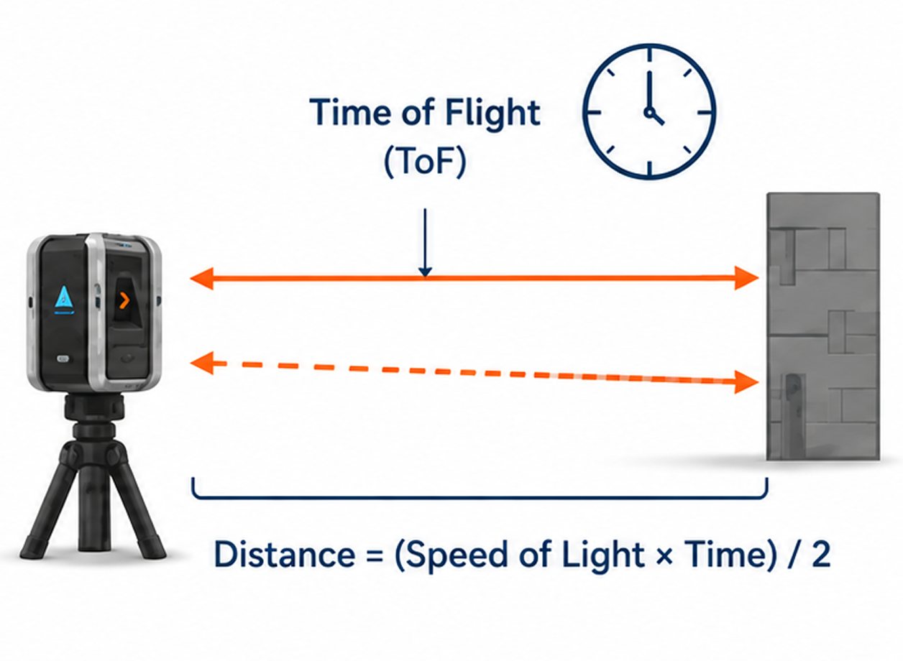
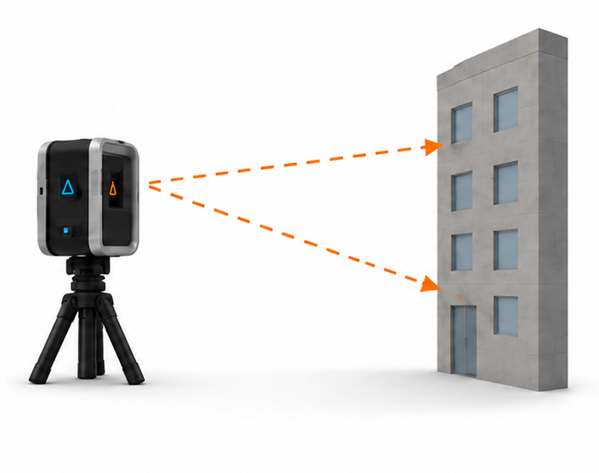
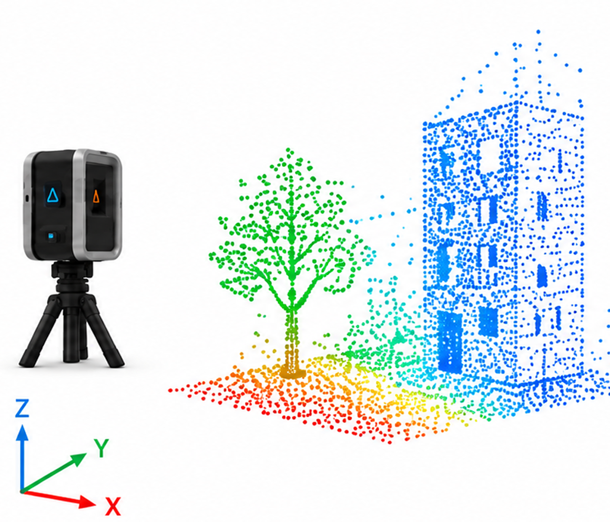
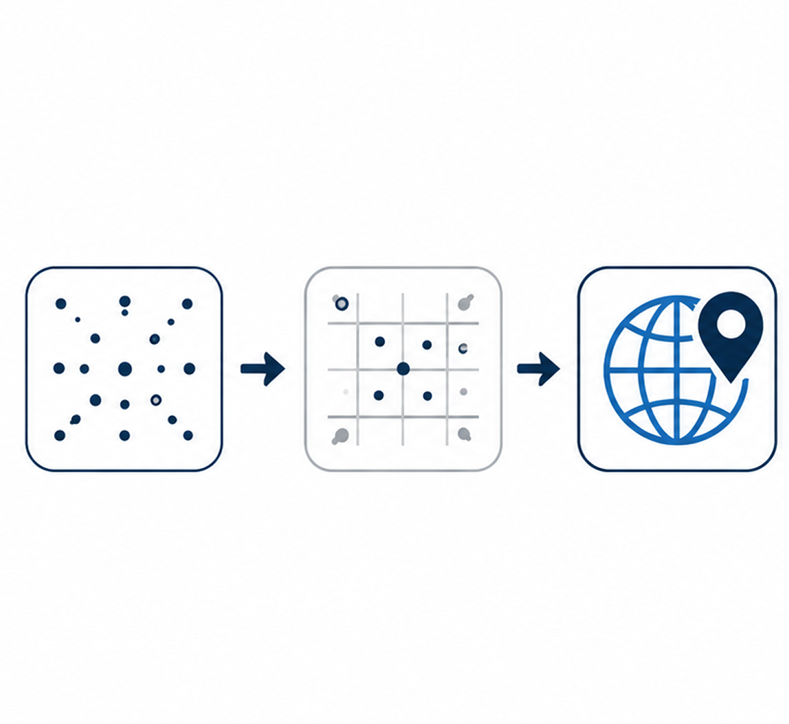
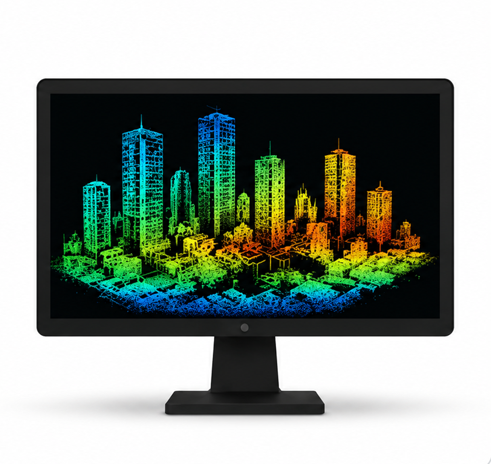

Terrestrial
LiDAR Technology
Understanding 3D Laser Scanning Technology for Engineering, Construction & Digital Twins
Understand the technology. Choose the right solution. Capture reality with confidence.
Terrestrial LiDAR captures millions of precise 3D measurement points in minutes, delivering a complete digital representation of real-world environments with survey-grade accuracy.
What is LiDAR?
LiDAR (Light Detection and Ranging) is a remote sensing technology that measures distances using laser light.
Instead of using measuring tapes, GPS points, or manual total station observations, a LiDAR scanner rapidly emits laser pulses toward surrounding objects. Each laser pulse travels to the object, reflects back to the scanner, and returns with extremely accurate distance information.
By repeating this process millions of times every second, the scanner creates a dense collection of spatial coordinates known as a Point Cloud.
This point cloud accurately represents the scanned environment and serves as the digital foundation for CAD models, BIM models, Digital Twins, inspections, and engineering analysis.


What is Terrestrial LiDAR?
Terrestrial LiDAR is the ground-based implementation of LiDAR technology.
Instead of being mounted on aircraft or drones, the scanner is positioned on a tripod or stable platform at ground level to capture highly detailed 3D information of buildings, factories, industrial plants, infrastructure, and construction sites.
Because the scanner remains stationary during each scan, Terrestrial LiDAR delivers some of the highest levels of geometric accuracy available in Reality Capture, making it the preferred technology for engineering-grade documentation.
Ground-Based
High accuracy from stable scanner positions.
Engineering Grade
Millimetre-level precision for critical engineering applications.
Reliable & Safe
Non-contact measurement for complex industrial environments.
Complete Capture
Captures every visible detail in a dense and reusable 3D dataset.
From Laser Pulse to Digital Reality
Terrestrial LiDAR captures millions of measurements in seconds and converts them into accurate, actionable engineering data.
See Technology in Action
Watch how LiDAR Scanners Capture and create accurate 3D Point cloud.
Laser Emission
The scanner emits hundreds of thousands of laser pulses per second in all directions.

Beam Scanning
The rotating mechanism scans the environment horizontally and vertically, directing laser pulses in all directions.

Object Interaction
Laser pulses hit objects such as buildings, trees, terrain, or structures.

Distance Measurement
The scanner measures the time it takes for each pulse to return after hitting an object.

Reflection Capture
Reflected pulses are captured by the scanner's sensors.

Point Cloud Generation
Each measurement is converted into a 3D point (X, Y, Z) with intensity (color). Millions of points create a detailed point cloud.

Data Processing
The point cloud data is cleaned, filtered, & georeferenced using software.

Result & Applications
The final 3D point cloud or models are used for various applications.

Choose the Right Solution for Your Needs
Whether you need your facility scanned by experts or want to build in-house scanning capability, WildPlantTS has the right option for you.
Need Your Facility Scanned?
LiDAR Laser Scanning Services
Our engineering team uses advanced terrestrial LiDAR technology to capture accurate existing conditions and deliver engineering-ready outputs for your projects.
- Existing Conditions Survey
- Factory & Plant Scanning
- Building Documentation
- Scan to BIM / CAD
- Construction Verification
- Digital Twin Creation
- Asset Documentation
Need Your Own LiDAR Scanner?
EPIC T150 Terrestrial LiDAR Scanner
Capture reality with the EPIC T150 — a survey-grade, long-range LiDAR scanner built for demanding industrial and infrastructure applications.
- High Accuracy & Long Range
- Fast Scanning Performance
- Built for Industrial Environments
- Intuitive Operation
- Robust & Reliable Design
- Complete Workflow Support
- Training & After-Sales Support
The Advantages That Drive Better
Engineering Outcomes
Terrestrial LiDAR technology empowers engineering teams with accurate, reliable, and comprehensive data to improve project efficiency, reduce risk, and support long-term digital transformation.
Survey-Grade Accuracy
Millimetre-level precision suitable for engineering, fabrication, and verification.
Rapid Data Capture
Capture millions of points within minutes instead of traditional days of survey.
Complete 360° Capture
Capture every visible surface in a full 360-degree environment.
Safe Non-Contact
Measurement
Capture data without physical contact & without compromising safety.
Reduce Rework & Risk
Accurate as-built data minimizes errors, clashes, and costly site revisits.
Supports Large Facilities
Ideal for complex plants, industrial sites, and large infrastructure projects.
Rich Engineering Data
High-density point clouds with intensity and color information for better analysis.
Future-Proof Documentation
Point clouds can be reused for future expansions, renovations, and Digital Twin initiatives.